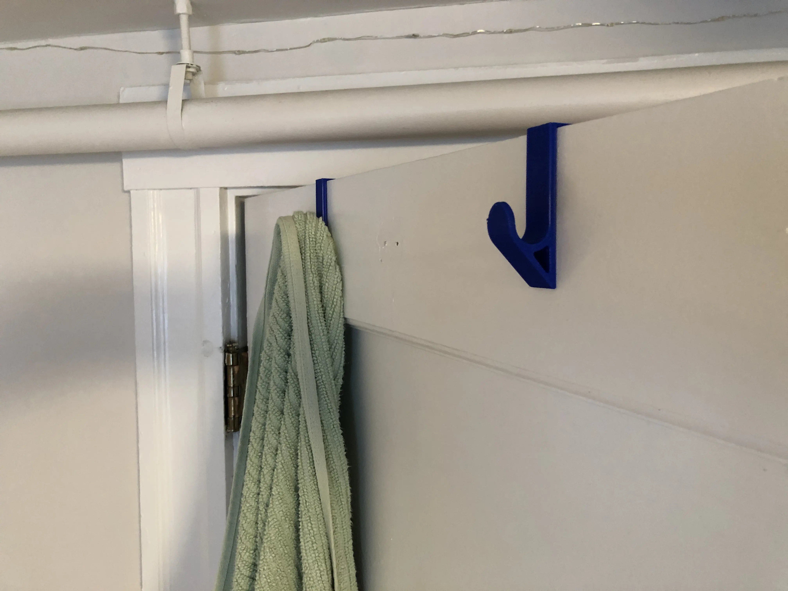

Towel Hooks
How does one get the best value from their education? Is it by learning all you can? Maybe. Is it utilizing all the free 3D printing resources? Definitely.

Summer 2021 saw me subleasing a small room in Medford, MA so I could intern with the Massachusetts DOT. I couldn't attach hooks to the doors or walls (and I didn't want to buy any of the hanging implements anyway).

So, I measured the width of the top of the door to see if I could make something that could hang from the top. Using this measurement, I designed a hook that would fit over a door and was not too ugly.
The first iteration was a simple J shape and deformed too much. My next iteration, see left, fixed this design flaw and has been successful at holding wet (and dry) towels for the many months since I printed it.
Download the STL here.